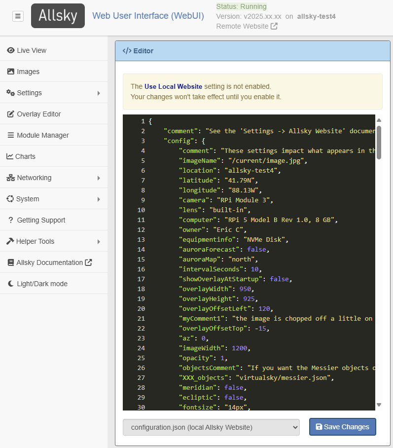

The Allsky Website allows you to display your most recent captured image on a Website on your Pi, on another machine, or on both. Saved timelapse videos, keograms, and startrails can also be viewed. Constellations and other objects can be overlayed on the image, and aurora activity can be listed.
For a local Allsky Website you only need to configure and enable it as described below; no installation is needed.
Before you configure a remote Website you must first install it - see the Allsky Website Installation Instructions. Then return to this page.
Steps to configure an Allsky Website are below.Configure Website settings
- In the WebUI, click on the Editor link.
- In the drop-down at the bottom of the page, select
one of the following, depending on which Website you want to configure:
- configuration.json (local Allsky Website) or
- remote_configuration.json (remote Allsky Website) (only if you installed a remote Website)
- You will then see something like this: 
- Information on the color scheme used by the Editor in the screenshot above is here .
- Ignore any message about the Website not being enabled -
you will do that in the next step.
-
The settings in both files are identical although their values may differ.
The files are split into two sections:
- "config" - settings for the webpage image and constellation overlay.
- "homePage" - settings to change the look and feel of the Website's home page including the icons on the left side, the information popout on the right side, an optional background image, etc.
- Each setting has a name and value,
separated by a colon (
:). Setting names in the file look like this and should generally NOT be changed unless, for example, you are adding a new icon on the left side of the screen.
Setting names MUST always be enclosed in double quotes. - You should change setting values as desired -
they have different colors depending on their types,
as described here.
Make sure all XX_NEED_TO_UPDATE_XX values are updated.
- Some settings like the latitude are also in the WebUI and should already be filled in. Those settings should only be changed in the WebUI, not in the file itself. The WebUI will ensure any changes are propogated to the appropriate file(s).
Tip: You can add comments to yourself by adding a new setting name and value, e.g.,
"myComment1" : "Need to check the next setting",
Be sure all setting names are unique.
-
The settings in both files are identical although their values may differ.
The files are split into two sections:
Enable the Website
- On the WebUI's Allsky Settings page display the Website and Remote Server Settings section.
- Enable the Website in either the Local Website Settings or Remote Website Settings subsection, depending on which Website you are configuring.
- Change the other settings in that subsection as needed. Remote Websites need to know the server name, login, etc.
The subsections below describe the settings in the json files, their default values, and a description.
config settings
Legend:
- Values for setting names with "" after them are sent to the Allsky Map server if your camera is on the map.
- Setting names with "" after them impact the virtual sky overlay, i.e., the constellation overlay. See the complete list of virtual-sky based options.
- Values marked with are automatically set during installation based on your WebUI settings and your Pi model, but can be overridden.
It's important to update your settings in the WebUI before configuring the Allsky Website so you only have to update them once.
| Setting | Default Value | Description |
|---|---|---|
| comment | This line is describes what this section is for and can be deleted if desired. | |
| imageName | /current/tmp/image.jpg (local) or image.jpg (remote) | The image uploaded from your allsky camera.
Normally should not be changed. |
| location | The location of your camera. | |
| latitude | Latitude of the camera as a decimal number (negative is Southern hemisphere) or as an unsigned number with "N" or "S", e.g., "41.79N" or 41.79 | |
| longitude | Longitude of the camera as a decimal number (negative is west of the prime meridian) or as an unsigned number with "E" or "W", e.g., "101.9W" or -101.9 | |
| camera | The camera type and model. Should not be changed - use the equipmentinfo setting instead. | |
| lens | Short description of the camera's lens, for example, its brand, mm, etc. | |
| computer | The Raspberry Pi model. Should not be changed - use the equipmentinfo setting instead. | |
| equipmentinfo | Any optional information on your equipment. | |
| owner | The camera owner. | |
| auroraForecast | false | Displays the 3-day aurora forecast in the top right corner when set to true. |
| auroraMap | Aurora oval map for the north or south hemisphere. | |
| intervalSeconds | 5 | Number of seconds between checks for new image. Can set to half the time between the start of one exposure and the start of the next one if you want to decrease CPU usage of the browser. |
| showOverlayAtStartup | false | Set to true to have the constellation overlay displayed when the page is loaded. |
| overlayWidth | 875 | Width of the overlay in pixels. |
| overlayHeight | 875 | Height of the overlay in pixels. |
| overlayOffsetLeft | 0 | Enter a positive number of pixels to move the constellation overlay to the right. Use negative numbers to move left. |
| overlayOffsetTop | 0 | Enter a positive number of pixels to move the constellation overlay down. Use negative numbers to move up. |
| az | 0 | (azimuth) Changes the rotation of the overlay. 0 is north up, 90 is north to the right, etc. |
| imageWidth | 900 | Width of the captured image in pixels. The image height will be calculated automatically to keep the aspect ratio constant. |
| opacity | 0.5 | Opacity of the constellation overlay, from 0.0 (invisible) to 1.0 (full brightness). |
| objectsComment | This line is for your information and can be deleted if desired. | |
| XXX_objects | virtualsky/messier.json | Name of one or more semi colon-separated files that contains other objects to display.
To use, remove the leading XXX_ from the setting name. |
| meridian | false | Display the meridian line? |
| ecliptic | false | Display the ecliptic line? |
| fontsize | 14px | Font size for constellation and star names. |
| cardinalpoints | true | Display the cardinal points (N, S, E, W)? |
| cardinalpoints_fontsize | 18px | Size of cardinal points. If they are hard to see, increase the size or change their color (see colours below). |
| showstarlabels | true | Display the star names? |
| projection | fisheye | Leave at the default if your Allsky camera has a fisheye lens (most do). |
| constellations | true | Show constellation lines? |
| constellationwidth | 0.75 | Width of lines making up constellations. |
| constellationlabels | false | Show the constellation names? |
| constellationboundaries | false | Show the constellation boundaries? |
| constellationboundarieswidth | 0.75 | Width of constellation boundary lines. |
| gridlines_eq | true | Show the RA/Dec grid lines? |
| gridlineswidth | 0.75 | Width of RA/Dec grid lines. |
| showgalaxy | true | Show galaxies? |
| galaxywidth | 0.75 | Width of galaxy outline line. |
| mouse | false | Allow the mouse to rotate the overlay? Can be useful when trying to get the overlay to fit properly over your image. |
| keyboard | true | Allow keyboard controls?
If set to true,
type ? when over the image for a list of keyboard commands.
|
| showdate | false | Show the date and time in the overlay? Not really needed if you add the date and time to your images. |
| showposition | false | Show/hide the latitude/longitude. Not very useful since clicking on the information icon on the left displays this information. |
| sky_gradient | false | Should the sky lighten toward the horizon? |
| gradient | false | Reduce the brightness of stars near the horizon? |
| transparent | true | Make the sky background transparent? |
| lang | en | Language the object names should be in. Look in ~/allsky/html/allsky/virtualsky/lang for available languages. |
| colours | Allows you to override the default overlay colors in "normal" and "negative" mode.
To see an example, remove the leading XXX_
from the samples.
rgba() takes 4 arguments: red, green, and blue values, plus opacity (0.0 - 1.0). |
|
| live | true | Update the display in real time? Rarely changed. |
| id | Do not change. | |
| AllskyVersion | Do not change. |
homePage settings
| Setting | Default Value | Description |
|---|---|---|
| comment | This line is describes what this section is for and can be deleted if desired. | |
| title | XX_NEED_TO_UPDATE_XX | Text displayed next to the Allsky logo on the upper left. Can be anything you want, but keep it short because it is also displayed on the tab in your browser. |
| og_description | XX_NEED_TO_UPDATE_XX | The description given to your Website if you drag/drop its icon to things like social media sites. Often the same as title. |
| backgroundImage | An optional background image for the Website home page.
Sub-settings:
|
|
| loadingImage | loading.jpg | The location of the "Loading ..." image that's displayed after you start the Website
and before the first captured image appears.
Can be a URL or a file name.
If this is a file on your Pi or remote server, put it in the Website's myFiles directory which is restored when upgrading the Allsky Website. |
| imageBorder | false | Should a border be added to the image? The border helps distinguish the image from the black background. |
| includeGoogleAnalytics | false | Should the analyticsTracking.js file be included?
If you don't know what this is, leave it false.
If you change the file it will be copied to newer releases of the Allsky Website during upgrades. |
| includeLinkToMakeOwn | true | Display the " Build your own" link at the bottom right of the home page? |
| personalLink | Allows you to add a link to the top of the home page, for example:
Click here to go to Google.
|
|
| og_type | website | Used by social media and other sites if you drag/drop your Website icon to them. Rarely changed. |
| og_url | Link to your Allsky Website page - used if you drag/drop your Website icon to social media and other sites. | |
| og_image | image.jpg | Link to a picture to display as a thumbnail when dragging/dropping your Website icon to social media and other sites. |
| favicon | allsky-favicon.png | Location of the "favorite icon" which is displayed in the browser title bar.
If this is a file on your Pi or remote server, put it in the myFiles directory which is restored when upgrading the Allsky Website. |
| thumbnailsizex | 100 | Horizontal size of keogram, startrails, and timelapse thumbnails. |
| thumbnailsizey | 75 | Vertical size of keogram, startrails, and timelapse thumbnails. |
| thumbnailsortorder | ascending | How the keogram, startrails, and timelapse thumbnails should be sorted. ascending means newest to oldest. descending means oldest to newest. |
| leftSidebar | Settings that modify the left sidebar's icons.
Each icon has the following sub-settings:
|
|
| leftSidebarStyle | CSS for the left sidebar itself, not the icons in it. To change the sidebar background to yellow: background-color: yellow;. | |
| popoutIcons | Settings that modify the information that appears in the popout on the right side.
Each entry contains an icon, name of the field, and the field's value,
and has the following settings:
|
|
| ConfigVersion | Do not change. |